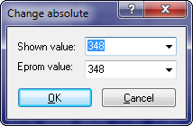
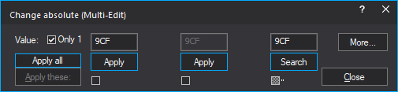

|
The dialog Change absolute (Menu Edit) |

  
|
|
The dialog Change absolute (Menu Edit) |
|

Modus: Standard
Use this command to set the current cell / all selected cells to a certain value.
WinOLS stores the data internally always in the same format that is used the eprom later on. But the values shown on the screen may differ, because of factor and offset in order to improve the display.
That’s why this dialog shows two values. The upper one is the same you’ll see in the current map or hexdump. All influences (like number system, factor and offset) are the same. The lower value is always in hex and the same value that is stored in the eprom later on. The two fields are connected and are updated automatically.
Modus: Multi-Edit

This function requites WinOLS 5.70 + FeatureUpdate |
If you have connected (narrow) maps, this window appears. Here you can enter values per column and either apply them individually or apply all the selected values together. You can use the More button to generate replace commands for the search dialog from the current settings.
Individual vs. all:
You can use the individual Apply buttons to apply this column. The "Apply these" button applies all checkmarked columns. With "Apply all", all columns (except search columns) are applied.
If you activate the "Only 1" checkbox, only the first input field is activated and all others are synchronized with it. (Except for search columns).
Use the "Enter" key to apply the Apply/Search button that matches the EditBox in which the cursor is currently located. The "Ctrl+Enter" keys correspond to the "Apply all" button.
Tri-State Checkboxes:
The checkboxes have 3 states. In the third state (half-gray), the Apply button below the field becomes a search for this column. Not all features of the search dialog are supported here, but you can at least enter alternative values (41/42/43).
You can switch back to standard mode via "More".
Shortcuts
| Symbol bar: |
| Keyboard: | = |